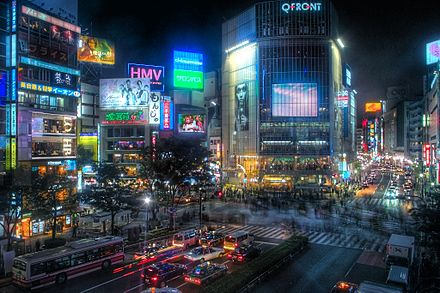

Cyberpunk is a subgenre of science fiction in a future setting that tends to focus on society as "high tech low life"[1] featuring advanced technological and scientific achievements, such as information technology and cybernetics, juxtaposed with a degree of breakdown or radical change in the social order.[2]
Cyberpunk plots often center on conflict among artificial intelligences, hackers, and among megacorporations, and tend to be set in a near-future Earth, rather than in the far-future settings or galactic vistas found in novels such as Isaac Asimov's Foundation or Frank Herbert's Dune.[3] The settings are usually post-industrial dystopias but tend to feature extraordinary cultural ferment and the use of technology in ways never anticipated by its original inventors ("the street finds its own uses for things").[4] Much of the genre's atmosphere echoes film noir, and written works in the genre often use techniques from detective fiction.[5]
Classic cyberpunk characters were marginalized, alienated loners who lived on the edge of society in generally dystopic futures where daily life was impacted by rapid technological change, an ubiquitous datasphere of computerized information, and invasive modification of the human body. — Lawrence Person[6]
Primary exponents of the cyberpunk field include William Gibson, Neal Stephenson, Bruce Sterling, Bruce Bethke, Pat Cadigan, Rudy Rucker, John Shirley and Philip K. Dick (author of Do Androids Dream of Electric Sheep?, from which the film Blade Runner was adapted).[7]
Blade Runner can be seen as a quintessential example of the cyberpunk style and theme.[3] Video games, board games, and tabletop role-playing games, such as Cyberpunk 2020 and Shadowrun, often feature storylines that are heavily influenced by cyberpunk writing and movies. Beginning in the early 1990s, some trends in fashion and music were also labeled as cyberpunk. Cyberpunk is also featured prominently in anime and manga:[8] Akira, Gunnm, Ghost in the Shell, Serial Experiments Lain, Dennou Coil, Ergo Proxy and Psycho Pass being among the most notable.[8][9]
Cyberpunk writers tend to use elements from hardboiled detective fiction, film noir, and postmodernist prose to describe the often nihilistic underground side of an electronic society. The genre's vision of a troubled future is often called the antithesis of the generally utopian visions of the future popular in the 1940s and 1950s. Gibson defined cyberpunk's antipathy towards utopian SF in his 1981 short story "The Gernsback Continuum," which pokes fun at and, to a certain extent, condemns utopian science fiction.[12][13][14]
In some cyberpunk writing, much of the action takes place online, in cyberspace, blurring the border between actual and virtual reality.[15] A typical trope in such work is a direct connection between the human brain and computer systems. Cyberpunk settings are dystopias with corruption, computers and Internet connectivity. Giant, multinational corporations have for the most part replaced governments as centers of political, economic, and even military power.
The economic and technological state of Japan, in the 80s influenced Cyberpunk literature at the time. Of Japan's influence on the genre, William Gibson said, "Modern Japan simply was cyberpunk."[11] Cyberpunk is often set in urbanized, artificial landscapes, and "city lights, receding" was used by Gibson as one of the genre's first metaphors for cyberspace and virtual reality.[16] The cityscapes of Hong Kong[17] and Shanghai[18] have had major influences in the urban backgrounds, ambiance and settings in many cyberpunk works such as Blade Runner and Shadowrun. Ridley Scott envisioned the landscape of cyberpunk Los Angeles in Blade Runner to be "Hong Kong on a very bad day".[19] The streetscapes of Ghost in the Shell were based on Hong Kong. Mamoru Oshii felt that Hong Kong's strange and chaotic streets where old and new exist in confusing relationships, fit the theme of the film well.[17] Hong Kong's Kowloon Walled City is particularly notable for its disorganized hyper-urbanization and breakdown in traditional urban planning to be an inspiration to cyberpunk landscapes.
